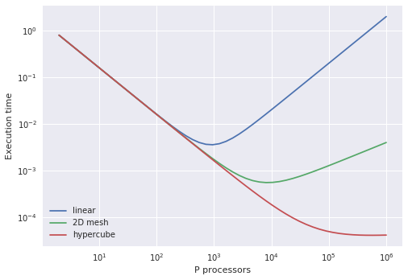
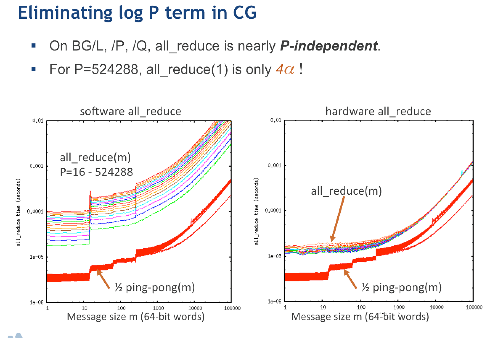
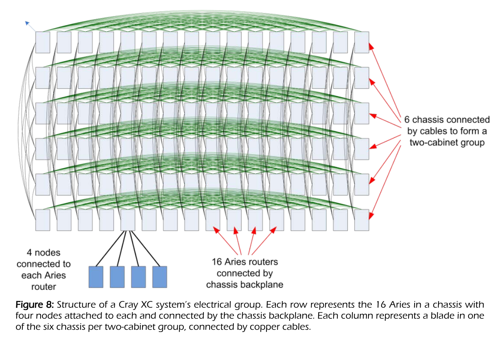
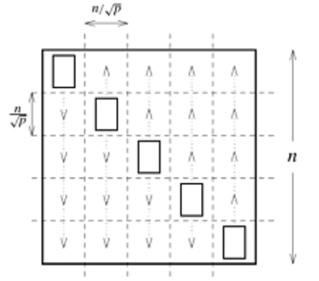
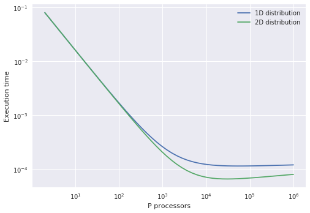

Inner products
$$ x^T y = \sum_{i=1}^N x_i y_i $$
OpenMP
The vectors x and y of length N are stored in a contiguous array in shared memory.
double sum = 0;
#pragma omp parallel for reduction(+:sum)
for (int i=0; i<N; i++)
sum += x[i] * y[i];
MPI
The vectors x and y are partitioned into $P$ parts of length $np$ such that
$$ N = \sum{p=1}^P n_p . $$
The inner product is computed via
double sum = 0;
for (int i=0; i<n; i++)
sum += x[i] * y[i];
MPI_Allreduce(MPI_IN_PLACE, &sum, 1, MPI_DOUBLE, MPI_SUM, comm);
- Work: $2N$ flops processed rate $R$
- Execution time: $\frac{2N}{RP} + \text{latency}$
How big is latency?
%matplotlib inline import matplotlib.pyplot as plt plt.style.use('seaborn') import numpy as np P = np.geomspace(2, 1e6) N = 1e9 # length of vectors R = 10e9/8 # (10 GB/s per core) (2 flops/16 bytes) = 10/8 GF/s per core t1 = 2e-6 # 2 µs message latency def time_compute(P): return 2*N / (R*P) plt.loglog(P, time_compute(P) + t1*(P-1), label='linear') plt.loglog(P, time_compute(P) + t1*2*(np.sqrt(P)-1), label='2D mesh') plt.loglog(P, time_compute(P) + t1*np.log2(P), label='hypercube') plt.xlabel('P processors') plt.ylabel('Execution time') plt.legend();


Torus topology


- 3D torus: IBM BlueGene/L (2004) and BlueGene/P (2007)
- 5D torus: IBM BlueGene/Q (2011)
- 6D torus: Fujitsu K computer (2011)
Dragonfly topology

Today’s research: reducing contention and interference


Images from this article.
Compare to BG/Q
- Each job gets an electrically isolated 5D torus
- Excellent performance and reproducibility
- Awkward constraints on job size, lower system utilization.
Outer product
$$ C_{ij} = x_i y_j $$
- Data in: $2N$
- Data out: $N^2$
Matrix-vector products
$$ yi = \sum{j} A_{ij} x_j $$
How to partition the matrix $A$ across $P$ processors?
1D row partition
- Every process needs entire vector $x$:
MPI_Allgather - Matrix data does not move
- Execution time $$ \underbrace{\frac{2N^2}{RP}}_{\text{compute}} + \underbrace{t_1 \log2 P}{\text{latency}} + \underbrace{tb N \frac{P-1}{P}}{\text{bandwidth}} $$

2D partition
- Blocks of size $N/\sqrt{P}$
- “diagonal” ranks hold the input vector
- Broadcast $x$ along columns:
MPI_Bcast - Perform local compute
- Sum
yalong rows:MPI_Reducewith roots on diagonal - Execution time $$ \underbrace{\frac{2N^2}{RP}}_{\text{compute}} + \underbrace{2 t_1 \log2 P}{\text{latency}} + \underbrace{\frac{2 tb N}{\sqrt{P}}}{\text{bandwidth}} $$

N = 1e4
tb = 8 / 1e9 # 8 bytes / (1 GB/s) ~ bandwidth per core in units of double
tb *= 100
plt.loglog(P, (2*N**2)/(R*P) + t1*np.log2(P) + tb*N*(P-1)/P, label='1D distribution')
plt.loglog(P, (2*N**2)/(R*P) + 2*t1*np.log2(P) + 2*tb*N/np.sqrt(P), label='2D distribution')
plt.xlabel('P processors')
plt.ylabel('Execution time')
plt.legend();
